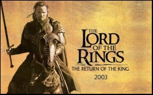
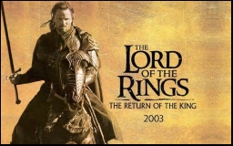
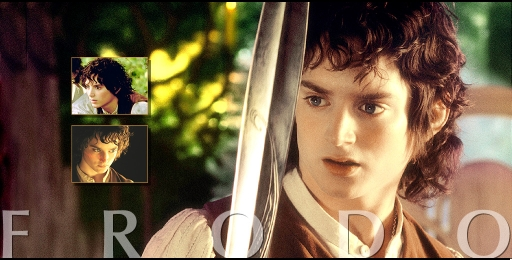
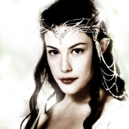

Gospodar prstenova po�inje otprilike 60 godina nakon zavr�etka Hobita. Prvi dio pri�e po�inje u "Prstenovoj dru�ini", kada Frodo Baggins, Bilbov ne�ak, dobiva Bilbov jedinstveni prsten. Bilbov stari prijatelj, Gandalf Sivi otkriva da je taj prsten zapravo Jedinstveni Prsten, objekt Sauronove mo�i, a ujedno i predmet kojeg Mra�ni gospodar tra�i ve�inu Tre�eg doba, predmet koji iskvari srca drugih u �elji da ga posjeduju i upravljaju mo�i koju on posjeduje. Sauron �alje Prstenove utvare, preru�ene u jaha�e u crnom u Shire, Frodovu domovinu, u potragu za Prstenom. Uz pomo� svog odanog sluge, Sam Gamgeeja, i trojice bliskih prijatelja, Merryja Brandybucka, Pippina Tooka i Fredegara Bolgera, Frodo uspijeva pobje�i. Dok Fredegar (Debeli Bolger) ostaje zametnuti trag pred Utvarama, Frodo i ostali odlaze predati Prsten u Posljednju doma�u ku�u, gospodara Elronda od Rivendella. Na putu im poma�e i Tom Bombadil, spa�avaju�i ih od Starca Vrbe i nekoliko dana ih ugosti, nahrani, napoji i savjetuje. U gradi�u Breeju, Frodovoj dru�ini priklju�uje se �ovjek zvan "Strider", koji je zapravo Aragorn, sin Arathornov, nasljednik prijestolja Gondora i Arnora. Aragorn, na zahtjev Gandalfa, vodi hobite do Rivendella. Me�utim, Froda je te�ko povrijedio vo�a Utvara, ali se usprkos tome oporavlja pod njegom gospodara Elronda Poluvilenjaka. U Rivendellu, hobiti saznaju da se Sauron mo�e pobijediti samo ako Aragorn prihvati svoje kraljevsko naslije�e i prijestolje Gondora, i tako ispuni drevno proro�anstvo rukuju�i ma�em Andurilom, iskovanim od krhotina Narsila, ma�a koji je neko� skinuo Prsten sa Sauronovog prsta, u Drugom dobu. Na Elrondovom savjetu prisustvuju predstavnici rasa Me�uzemlja, Vilenjaci, Patuljci i Ljudi. Vo�eni Elrondom, dolaze do zaklju�ka da mogu spasiti Me�uzemlje samo ako odnesu Prsten u zemlju sjenki, Mordor i uni�te ga u Kletoj gori, gdje je i iskovan. Frodo se dobrovoljno javlja za taj zadatak i Prstenova dru�ina je formirana da mu pomogne: sam Frodo, Gandalf, Aragorn, Boromir Gondorski, patuljak Gimli, vilenjak Legolas i Frodova tri suputnika hobita. Put ih nosi u rudnike Morije, gdje ih prati Golum, bice koje je je Bilbo sreo u Goblinskim pecinama Maglenog gorja, prije mnogo godina. Golum je dugo posjedovao Prsten, prije nego ga je na�ao Bilbo. Gandalf obja�njava da je Gollum nekada bio slican hobitima, prije nego je dobio Prsten, koji ga je iskvario. Rob Prstenovoj volji, Gollum ocajnicki zeli ponovo uzeti "svoje zlato". U nastavku, Pippin slucajno razotkrije njihovo prisustvo, i Druzina je napadnuta od strane Sauronovih sluga. Gandalf se sukobljava s ogromnim drevnim demonom, Balrogom i pada u duboki ponor, vjerojatno u svoju smrt. Bjezeci iz Morije, Druzina, predvodena Aragornom, odlazi u vilenjacke prostore Lothloriena. Tamo gospodarica Galadriel pokazuje Frodi i Samu vizije proslosti, sadasnjosti i buducnosti. Frodo ugleda i Sauronovo oko, metafizicki izraz Saurona, i Galadriel privuce Prsten. Na kraju prvog dijela, nakon sto Druzina prijede Veliku rijeku Anduin, Frodo odlucuje da sam ode u Mordor, prvenstveno zbog iskvarljujuce moci Prstena na Boromira. Medutim, njegov odani Sam inzistira da pode s njim.
|  | |||
|  |  | ||